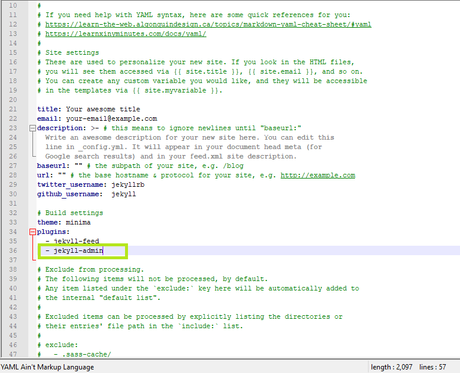
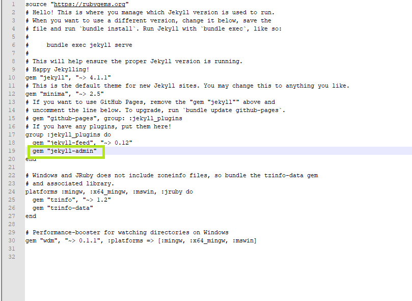
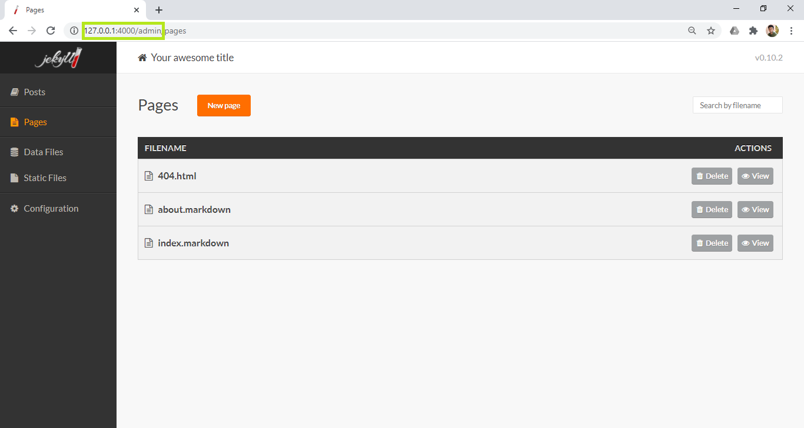
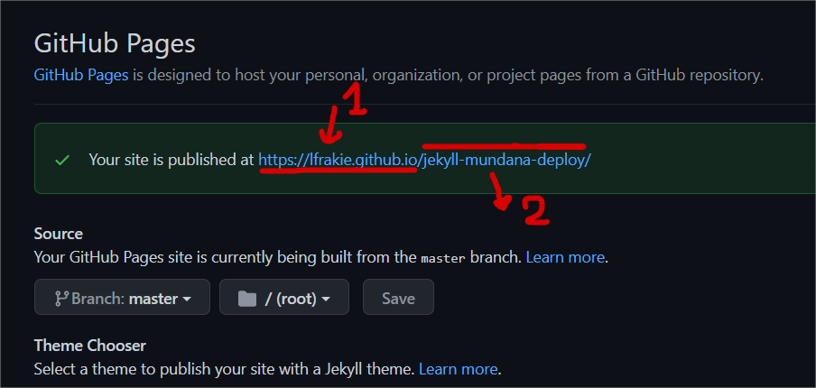

EMPEZANDO
INSTALACIÓN
1. Primero instalaremos Ruby, que es un administrador de paquetes que usamos para instalar Jekyll:
sudo apt-get update
sudo apt-get install software-properties-common -y
sudo apt-get install ruby-full -y
2. A continuación, para instalar jekyll, use los siguientes comandos:
sudo gem install jekyll
sudo gem install bundler
Font: https://raspberrypi-guide.github.io/other/installing-jekyll-webserver
// ISSUE with g++
Es posible que tengamos errores al instalar jekyll por el tema de nos falte este archivo g++-aarch64-linux-gnu en ese caso debemos onstalar dicho paquete:
sudo apt-get update
sudo apt-get install g++-aarch64-linux-gnu
Font: https://howtoinstall.co/es/g++-aarch64-linux-gnu
NUEVO PROYECTO LIMPIO
jekyll new my-awesome-site
cd my-awesome-site
bundle exec jekyll serve
// Serve on LAN:
jekyll serve --host=0.0.0.0
INICIAR CON PLANTILLA
- Clonar repositorio:
git clone https://github.com/wowthemesnet/mundana-theme-jekyll.git mundana-- - Ingresar a la carpeta donde se clonó:
cd mundana-- - Instalar (gemas) o depedencias:
bundle install
-- - Ejecutar servidor:
bundle exec jekyll serve -H 0.0.0.0
Font: https://github.com/wowthemesnet/mundana-theme-jekyll
SITIOS DE TEMPLATES:
https://jekyllthemes.io/free
JEKYLL ADMIN UI
Estos pasos son para instalar el administrador grafico de JEKYLL en nuestros proyectos, para de esta manera poder
CONFIG
- Abrir Directorio Jekyll del proyecto
- Abra el archivo
config.ymly agregamos el siguiente codigo.
`- jekyll-admin`

3. Abrir GemFile y añadir el siguiente codigo:
gem "jekyll-admin

4. Ejecute el servidor:
bundle exec jekyll serve -H 0.0.0.0
Y ahora deberiamos poder visualizar en:
http://192.168.0.130:4000/admin !# Link de ejemplo podra variar entre http://localhost:4000/admin o http://127.168.0.130:4000/admin 
Font: https://akhilgeorge.com/install-admin-dashboard-on-your-jekyll-blog
// Errores
No ejecuta el servidor
Pueda que uno de los errores sea que estemos olvidando agregar bundle exec al comando de ejecución:
bundle exec jekyll serve -H 0.0.0.0
Font: https://github.com/jekyll/jekyll/issues/7054
jekyll-admin | Not Found
Otro pueda que sea por el tema de que falte instalar jekyll-admin
``` gem install jekyll-admin
```
bundle install
Es posible que necesitemos este comando para poder instalar las dependencias necesarias.
bundle install
Buscador - PID
https://blog.webjeda.com/instant-jekyll-search/
Jekyll to GitHub Pages
Configuración
Subimos nuestro proyecto a nuestro repositorio como de costumbre desde la rama MASTER de nuestro repositorio, pero antes debemos de tener la siguiente configuración en nuestro _config.yml
baseurl: '/jekyll-mundana-deploy'
url: 'https://lfrakie.github.io'
1. baseurl: "Aqui irá el nombre de nuestrorepositorio o subPath de nuestro sitio web ejem /jekyll-mundana-deploy "
2. url: "Aqui va la base host "

Resultado
Ver DEMO GitHub Project: https://github.com/LFrakie/jekyll-mundana-deploy

FONT: - https://www.youtube.com/watch?v=z6dx_OUChRs&ab_channel=Otimic -